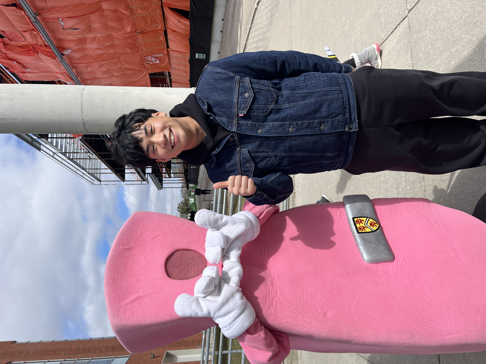
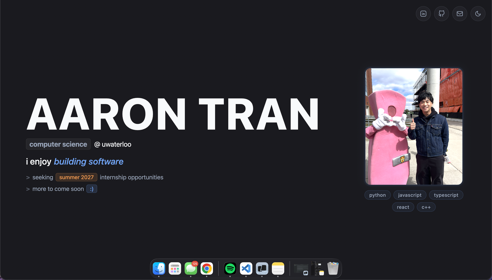
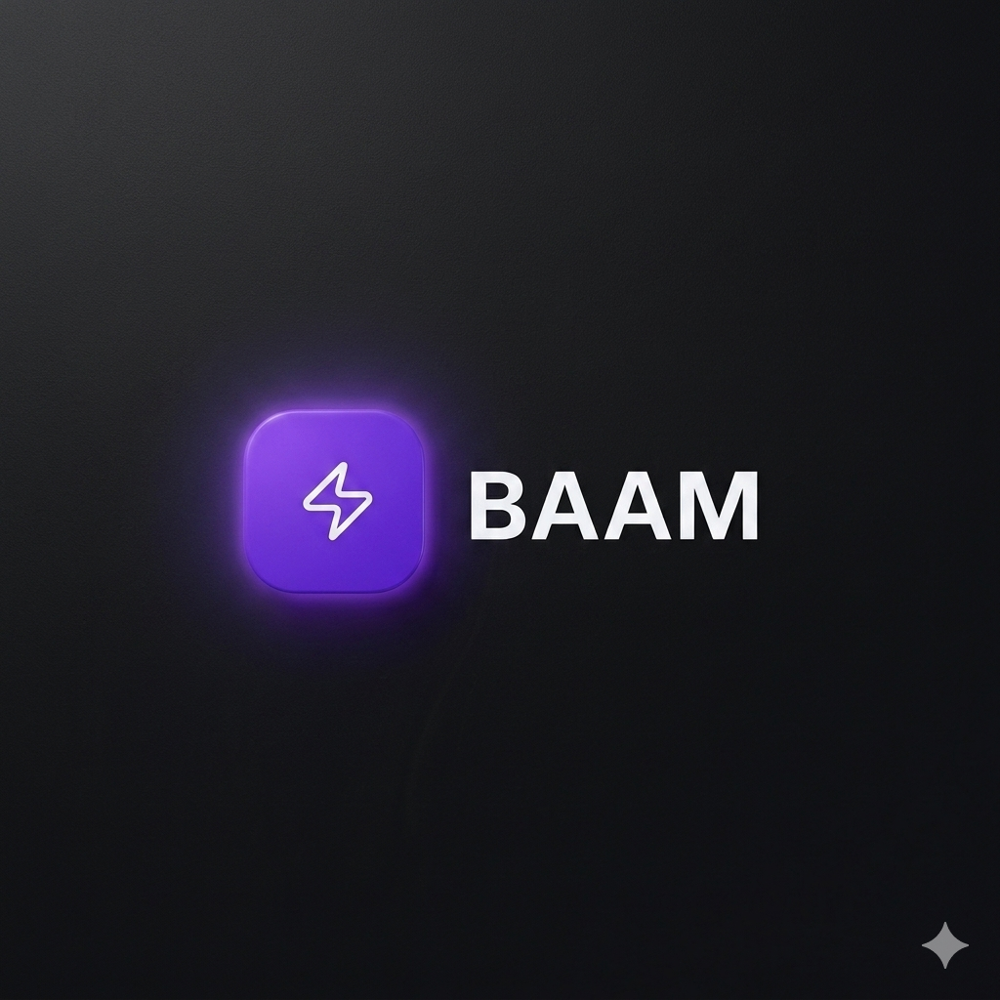

computer science @ uwaterloo
i enjoy building software


a personal portfolio built from scratch with html, css & javascript — featuring a food gallery, dark/light mode, and interactive animations.

a bet tracking web app with an imessage extension — make bets with friends and hold each other accountable.